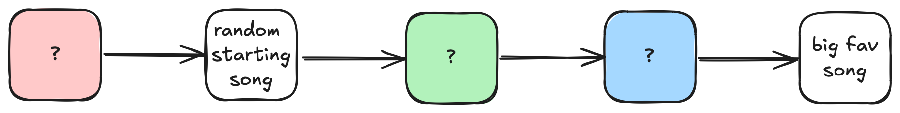

TLDR; Keep your playlists small. There’s a 50% chance of finding your favourite song in less than or equal to 4 steps in a playlist of length 9.
I love music. I listen to music all the time and I especially listen to music when I go running, where I would put it on shuffle mode. Now a few runs ago, I was aggressively double tapping my airpods to jump to the next song, skipping a lot of songs in the process until it reaches a song that I was keen on listening to at that moment. That’s when I started thinking, given that I started at a particular song in the playlist, can I quantify how many steps do I need to take to reach a particular favourite song in my playlist?

Now it is important to note that modern music streaming services like Spotify do not necessarily implement naive shuffle functions which samples the next song uniformly at random. It is more likely that they implement a weighted shuffle function which samples the next music with replacement, assuming some weight on the song based on, for example, popularity of the song (global recommendation approach) or occurrence of listening to the song (a personalized approach). For the sake of this problem, however, we will assume that the songs in the playlist are shuffled uniformly at random.
There are many ways to approach this problem (which is the beauty of this problem). For example, one can form a complete digraph for the songs in the playlist, remove the directed path from your favourite song to any other node (but keep the inverse so that your favourite song is a sink) and then count the number of all possible paths between any node (song) and the target favourite song. Note that this is different to finding a shortest path which we have Dijsktra’s algorithm for. That algorithm runs in O\left(|E| + |V| \log |V| \right) time where E is the multiset of edges and V the set of nodes. Rather, the problem of finding the number of paths is much harder and would not have an algorithm that enjoy such speeds.
Instead of the graph approach, I will go down the dark hole known as combinatorics. The downside is that the setup will be less natural and will require some level of abstraction. The upside, however, is that once everything is set up nicely, solving the problem essentially amounts to careful counting. Let’s start seeing an example on how we can do this.
Painting paths in a playlist
Suppose a playlist contains three songs s_1, s_2, s_T. Let’s ask the most basic question of how many paths can I reach the target song s_T? Now the answer is not 3! because you can reach s_T without visiting all the other songs in the playlist. For example, you can reach s_T via the route s_1 \to s_T or s_2 \to s_T respectively. In total, you can reach s_T in 5 different ways. These are:
- s_T \to s_T
- s_1 \to s_T
- s_2 \to s_T
- s_1 \to s_2 \to s_T
- s_2 \to s_1 \to s_T
where the first path s_T \to s_T is the tautological path of starting and ending at s_T.
How about if the playlist contain four songs s_1, s_2, s_3, s_T, how many paths can I reach the target song s_T? You should be convinced by now that the answer is not 4!, but how many? The answer is that there are 16 paths in total. For your sanity, I will enumerate this long list below:
- s_T \to s_T
- s_1 \to s_T
- s_2 \to s_T
- s_3 \to s_T
- s_1 \to s_2 \to s_T
- s_2 \to s_1 \to s_T
- s_3 \to s_2 \to s_T
- s_2 \to s_3 \to s_T
- s_1 \to s_3 \to s_T
- s_3 \to s_1 \to s_T
- s_1 \to s_2 \to s_3 \to s_T
- s_2 \to s_1 \to s_3 \to s_T
- s_3 \to s_2 \to s_1 \to s_T
- s_2 \to s_3 \to s_1 \to s_T
- s_1 \to s_3 \to s_2 \to s_T
- s_3 \to s_1 \to s_2 \to s_T.
Now you should start to see a pattern. In both cases where the playlist is of length three and four, we observe that the target song s_T remains fixed and the only thing that changes is the order of the songs prior to s_T. Further, the number of songs that are reordered is progressively unconstrained to acknowledge that you can reach the target song in an increasing number of steps. Thus, the number of paths to reach the target song s_T is just a sum of k-permutations of n-1 songs where k is the number of steps allowed to reach s_T and n is the length of the playlist. This sum is done from 0, which represents the tautological path s_T \to s_T, up to n-1 which represents a permutation of the path s_1 \to s_2 \to \cdots \to s_{n-1} \to s_T. This argument essentially is a proof of the following result.
Proposition 1 (Number of paths given playlist) The number of paths to reach the target song s_T in a playlist \mathcal{P} of length n is given by: N(n; \mathcal{P}) = \sum_{j=0}^{n-1} P(n-1, j).
where P(m, k) is the k-permutation of m objects.
In the case of n=4 that we have just enumerated above, the number of steps is given by:
N(4) = P(3, 0) + P(3, 1) + P(3, 2) + P(3, 3) = 1 + 3 + 6 + 6 = 16
which agrees with our brute-force enumeration. Similarly, you can check that N(3) = 5 as we have enumerated before.
So this is a good result, but it has not answer our main question:
Given a song s in playlist \mathcal{P}, how many ways can you reach your favourite song s_T \in \mathcal{P} in less than or equal to t \in \mathbb{Z}^+ steps?
It has, however, answered the easier question:
Given a playlist \mathcal{P}, how many ways can you reach your favourite song s_T \in \mathcal{P} in less than or equal to t \in \mathbb{Z}^+ steps?
This question is answered by using Proposition 1 and simply truncating the summation at t \leq n-1.
The difference between the main question and this easier question is that the former essentially wants N | s, \mathcal{P} whereas what we have at the moment gives N | \mathcal{P}. So let’s move towards a solution, suppose we start at a song s \in \mathcal{P}, what then?
Answering the main question
I have been using the term playlist quite loosely throughout this article so let’s make it concrete. A playlist \mathcal{P} of length n is simply a finite set of songs \{ s_1, s_2, \ldots, s_{n-1}, s_T\}. It does not assume any ordering, and our logic doess not assume ordering unless mentioned otherwise. This definition aligns with what we had before and so the result(s) remain.
As per Proposition 1, we know that N(4) = 16 and reaching the target song in less than or equal to k \leq n-1 steps is given by \sum_{j=0}^{k} P(n-1, j). These makes no assumption on where we start the path at. Suppose now you start at song s_3 in the playlist. How many paths can you take take to reach your target song s_T? Let’s start enumerating all the possible paths to reach s_T again, but this time we highlight how many steps it takes to reach s_T from s_3.
- s_T \to s_T (impossible)
- s_1 \to s_T (impossible)
- s_2 \to s_T (impossible)
- s_3 \to s_T (1)
- s_1 \to s_2 \to s_T (impossible)
- s_2 \to s_1 \to s_T (impossible)
- s_3 \to s_2 \to s_T (2)
- s_2 \to s_3 \to s_T (1)
- s_1 \to s_3 \to s_T (1)
- s_3 \to s_1 \to s_T (2)
- s_1 \to s_2 \to s_3 \to s_T (1)
- s_2 \to s_1 \to s_3 \to s_T (1)
- s_3 \to s_2 \to s_1 \to s_T (3)
- s_2 \to s_3 \to s_1 \to s_T (2)
- s_1 \to s_3 \to s_2 \to s_T (2)
- s_3 \to s_1 \to s_2 \to s_T (3).
To make things easier, define a t-path from s_j to be a path that starts at s_j and ends at s_T in t \in \mathbb{Z}^+ steps. s_1 \to s_T is an example of a 1-path from s_1. From the enumeration above, observe firstly that there are some impossible paths where s_3 is not visited at all. Then you have five 1-paths to reach s_T from s_3, four 2-paths and two 3-paths.
Just focusing on 1-paths here, it is easy to see that the number of 1-paths to reach s_T from s_3 is given by N(n-1) because we can “group” s_3 \to s_T together and treat it as a single end point s_T'. It is also easy to see that the number of 3-paths is essentially a permutation on songs that are left, which in this case is 2! = 2. It is tempting now to say that the case of 2-paths is simply N(n-1) - 1 since we are discarding the unique s_3 \to s_T case which exists only for 1-paths and that everything else is just a permutation of the remaining songs; and you are not wrong to think so as we shall see! The problem is that it does not give a strong explanation for what a general pattern would be.
So let’s look at a playlist of length n=5 and count each t-path from s_4. At this point enumeration of the playlist can get a bit crazy as we know by Proposition 1 that there are N(5) = 65 paths to reach s_T from s_4. I highly recommend you enumerate these paths by writing code (I will provide a fugly one towards the end and it will not be in python). Now if we focus on each t-paths, we see that there are
- 16 counts of 1-paths,
- 15 counts of 2-paths,
- 12 counts of 3-paths,
- 6 counts of 4-paths.
As we have observed before, the number of 1-paths is indeed N(n-1) = N(4) = 16. Discard the unique s_4 \to s_T path and we have 15 count of 2-paths. And that the number of 4-paths is just a permutation on songs that are left giving us (5-2)! = 3! = 6. So how do we explain the 12 counts of 3-paths? Now a 3-path from s_4 would look like the following
\textcolor{blue}{\rule{1.8ex}{1.8ex}} \to s_4 \to \rule{1.8ex}{1.8ex} \to \rule{1.8ex}{1.8ex} \to s_T,
where the \textcolor{blue}{\rule{1.8ex}{1.8ex}}, \rule{1.8ex}{1.8ex} are placeholders for other songs. Let’s start counting and consider parity. If we assume \textcolor{blue}{\rule{1.8ex}{1.8ex}} is null, i.e., we start at s_4, then there are P(3, 2) possible ways to fill in \rule{1.8ex}{1.8ex}, and hence, P(3, 2) number of steps to reach s_T. On the other hand, if we assume \textcolor{blue}{\rule{1.8ex}{1.8ex}} is not null, i.e., the path starts at one of s_1, s_2, s_3, then there are P(3, 3) possible ways to fill in \textcolor{blue}{\rule{1.8ex}{1.8ex}}, \rule{1.8ex}{1.8ex}. So in total, the number of 3-paths is P(3, 2) + P(3, 3) = 12 which is what we observed in the enumeration!
In fact, we can run this same argument for all the other t-paths as well. For a 4-path from s_4, we would have the following sequence
s_4 \to \rule{1.8ex}{1.8ex} \to \rule{1.8ex}{1.8ex} \to \rule{1.8ex}{1.8ex} \to s_T.
In this case, it is trivial to see that there are P(3, 3) = 6 ways to fill in the \rule{1.8ex}{1.8ex} boxes.
For 2-paths, we have the following sequence
\textcolor{green}{\rule{1.8ex}{1.8ex}} \to \textcolor{blue}{\rule{1.8ex}{1.8ex}} \to s_4 \to \rule{1.8ex}{1.8ex} \to s_T.
If we assume both \textcolor{green}{\rule{1.8ex}{1.8ex}}, \textcolor{blue}{\rule{1.8ex}{1.8ex}} to be null, then there are P(3, 1) possible ways to fill in \textcolor{black}{\rule{1.8ex}{1.8ex}}. The case where \textcolor{blue}{\rule{1.8ex}{1.8ex}} is null but \textcolor{green}{\rule{1.8ex}{1.8ex}} is not null is impossible, so suppose only \textcolor{green}{\rule{1.8ex}{1.8ex}} is null. Then there are P(3, 2) possible ways to fill in \textcolor{blue}{\rule{1.8ex}{1.8ex}}, \textcolor{black}{\rule{1.8ex}{1.8ex}} with songs. And finally if \textcolor{green}{\rule{1.8ex}{1.8ex}} not null, then there are P(3, 3) ways to fill in \textcolor{green}{\rule{1.8ex}{1.8ex}}, \textcolor{blue}{\rule{1.8ex}{1.8ex}}, \textcolor{black}{\rule{1.8ex}{1.8ex}}. Thus in total, we have P(3, 1) + P(3, 2) + P(3, 3) = 15 paths to reach s_T.
The 1-path case is just considering an additional box \textcolor{red}{\rule{1.8ex}{1.8ex}} that can take a null value and running the same argument should lead you to 16 steps in total. It should not be difficult to see how we can generalize this pattern to arbitrary playlists of length n so I leave the proof as an exercise for you to do.
Such a proof would yield the following result.
Theorem 1 (Number of t-paths) Let \mathcal{P} be a playlist of length n. Given a starting song s \in \mathcal{P} and a target song s_T \in \mathcal{P}, the number of t-paths from s to s_T is given by:
N_{\text{t-path}}(t, n; s, s_T) = \sum_{j=0}^{n-1-t} P(n-2, n-2-j).
This is a great result as it gives us a way to compute the number of paths to reach a song in a playlist of length n in exactly t steps. As a consequence, we can now compute the number of paths to reach a song in a playlist of length n in less than or equal to t steps.
Corollary 1 (Number of paths to reach favourite song in \leq t steps) Let \mathcal{P} be a playlist of length n. Given a starting song s \in \mathcal{P} and a target song s_T \in \mathcal{P}, the number of paths to reach s_T in less than t steps is given by:
N_{\text{paths} \leq t \text{ steps}} = \sum_{\ell=1}^{t} N_{\text{t-path}}(\ell, n; s, s_T).
What’s great about Corollary 1? Well it gives a satisfying answer to our main question of
Given a song s in playlist \mathcal{P}, how many ways can you reach your favourite song s_T \in \mathcal{P} in less than or equal to t \in \mathbb{Z}^+ steps?
which is all that we wanted. To see this in practice, fix t=4 to consider the number of paths to reach your favourite song in less than or equal to 4 steps. Then we look at N_{\text{paths} \leq t \text{ steps}} with varying 5 \leq n \leq 14. We will also consider the probability of reaching your favourite song in less than or equal to t steps by computing N_{\text{paths} \leq t \text{ steps}}/N(n). The numbers are tabulated below.
| n | N_{\text{paths} \leq t \text{ steps}} | \lfloor \log N_{\text{paths} \leq t \text{ steps}}\rfloor | N_{\text{paths} \leq t \text{ steps}}/N(n) |
|---|---|---|---|
| 5 | 49 | 1 | 0.75 |
| 6 | 237 | 2 | 0.73 |
| 7 | 1271 | 3 | 0.65 |
| 8 | 7783 | 3 | 0.57 |
| 9 | 54741 | 4 | 0.50 |
| 10 | 438329 | 5 | 0.44 |
| 11 | 3945547 | 6 | 0.40 |
| 12 | 39456291 | 7 | 0.36 |
| 13 | 434020313 | 8 | 0.33 |
| 14 | 5208245221 | 9 | 0.31 |
It is not suprising to see that with increasing number of playlist length n, the number of paths N_{\text{paths} \leq t \text{ steps}} increases dramatically. In fact, as we have computed with \lfloor \log N_{\text{paths} \leq t \text{ steps}} \rfloor, the order of magnitude increases roughly by one at every increasing length n. The probability, however, does not decrease as dramatically, so you still have a good chance of finding your favourite songs with ease.
Today, I have a playlist with 53 songs. The number of possible paths to reach my current favourite song in this playlist in less than or equal to t=4 steps given an abitrary starting song is
16865511683372560412495381946812946399349813999270471596889656524800 \sim 10^{67}
paths which is on the order of 67. This is an exorbitantly huge number with 67 zeros. If we were to compute N_{\text{paths} \leq t \text{ steps}}/N(n), we get 7.7% which is honestly not too bad. But still… an 8% chance of finding my favourite song is quite low. Moral of the story? Try to make your playlists small.
What next?
Here are some key directions we can take to explore.
- What if instead of a single target favourite song s_T, we have a set of target songs \{s_{T_1}, s_{T_2}, ...\}. How will the analysis differ when we start at any arbitrary song?
- Similarly, what if instead of a single starting song s, we have a set of arbitrary starting songs \{s_1, s_2, ...\}. How will the number of paths change?
- Do a precise analysis on the order of growth in the number of paths. If you divide N_{\text{paths} \leq t \text{ steps}} for n with n-1 successively, you will see that the growth is factorial. This is kind of expected but can you prove it? It is easy to see that the growth in the total number of paths is factorial by using Proposition 1, but how about for paths up to t steps?
- Do a precise analysis on N_{\text{paths} \leq t \text{ steps}}/N(n). Seems like there’s approximately a ~90% drop for the numbers that we have tabulated as n increases. Finding a bound would be excellent.
- I’m pretty sure we can try solving this problem using group theory.
- Consider weighted shuffle on playlists now, how would you solve the same problem? Maybe a graph approach is inevitable?